The multivariate normal distribution is the multivariate generalization of the univariate normal distribution. The motivation for the widespread normality assumptions in probabilistic modeling is known to lie in the central limit theorem: in probabilistic models, probabilistic terms represent the summation of very many random processes that are not explained by the deterministic components of the respective model, that is, by a formalized scientific theory. According to the central limit theorem, the sum of these unexplained random processes is then precisely normally distributed.
Beyond this fundamental aspect, the normal distribution has many favorable mathematical properties that enable its use in many areas of probabilistic modeling. Applications of multivariate normal distributions are therefore found in the context of the general linear model, the generalizations of the general model to hierarchical linear models or multivariate general linear models, Bayesian inference under normality assumptions, and not least the theory of probabilistic filters, such as the Kalman-Bucy filter.
29.1 Construction of multivariate normal distributions
In this section, we show how a bivariately normally distributed random vector can be constructed by transforming and concatenating two univariately normally distributed random variables. To do so, we first recall the concept of a normally distributed random variable. We repeat the corresponding definition from Chapter 21 here to introduce the terminology for multivariate normal distributions.
Definition 29.1 (Normally distributed random variable)\(\xi\) be a random variable with outcome space \(\mathbb{R}\) and PDF \[\begin{equation}
p : \mathbb{R} \to \mathbb{R}_{>0}, x\mapsto p(x)
:= \frac{1}{\sqrt{2\pi \sigma^2}}\exp\left(-\frac{1}{2\sigma^2}(x - \mu)^2\right).
\end{equation}\] Then we say that \(\xi\) follows a normal distribution (or Gaussian distribution) with expectation parameter \(\mu \in \mathbb{R}\) and variance parameter \(\sigma^2 > 0\) and call \(\xi\) a normally distributed random variable. We abbreviate this by \(\xi \sim N(\mu,\sigma^2)\). We denote the PDF of a normally distributed random variable by \[\begin{equation}
N\left(x;\mu,\sigma^2\right) := \frac{1}{\sqrt{2\pi \sigma^2}}\exp\left(-\frac{1}{2\sigma^2}(x - \mu)^2\right).
\end{equation}\]
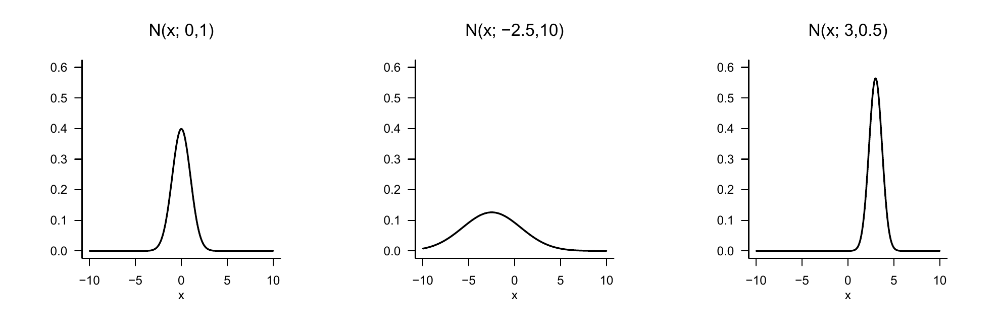
Figure 29.1: Probability density functions of univariate normal distributions.
Visually, the parameter \(\mu\) of a normally distributed random variable corresponds to the value of highest probability density, and the parameter \(\sigma^2\) specifies the width of the PDF (Figure 29.1). Further, as is well known, the expectation and the variance of a normally distributed random variable are \[\begin{equation}
\mathbb{E}(\xi) = \mu \mbox{ and } \mathbb{V}(\xi) = \sigma^2.
\end{equation}\] Finally, a normally distributed random variable of the form \(\xi \sim N(0,1)\) is also called standard normally distributed.
The following theorem shows how two independent, univariately standard normally distributed random variables can be combined to construct a bivariately distributed random vector. The distribution of such a random vector is then called a bivariate normal distribution.
Theorem 29.1 (Construction of bivariate normal distributions) Let \(\zeta_1 \sim N(0,1)\) and \(\zeta_2 \sim N(0,1)\) be two independent standard normally distributed random variables. Further, let \(\mu_1,\mu_2\in \mathbb{R}\), \(\sigma_1,\sigma_2>0\) and \(\rho \in ]-1,1[\). Finally, let \[\begin{align}
\begin{split}
\xi_1 & := \sigma_1\zeta_1 + \mu_1\\
\xi_2 & := \sigma_2\left(\rho\zeta_1 + (1 -\rho^2)^{1/2}\zeta_2\right) + \mu_2.
\end{split}
\end{align}\] Then the PDF of the random vector \(\xi := (\xi_1,\xi_2)^T\), that is, the joint distribution of \(\xi_1\) and \(\xi_2\), has the form \[\begin{equation}
p : \mathbb{R}^2 \to \mathbb{R}_{>0},\, x \mapsto p(x) := (2\pi)^{-\frac{n}{2}}|\Sigma|^{-\frac{1}{2}}\exp\left(-\frac{1}{2}(x-\mu)^T \Sigma^{-1} (x-\mu)\right),
\end{equation}\] where \(n:=2\) and \(\mu \in \mathbb{R}^{2}\) and \(\Sigma \in \mathbb{R}^{2\times 2}\) are given by \[\begin{equation}
\mu =
\begin{pmatrix}
\mu_1 \\
\mu_2
\end{pmatrix}
\mbox{ and }
\Sigma =
\begin{pmatrix}
\sigma_1^2 & \rho\sigma_1\sigma_2 \\
\rho\sigma_2\sigma_1 & \sigma_2^2 \\
\end{pmatrix}.
\end{equation}\]
For a proof of the theorem, we refer to DeGroot & Schervish (2012).
Example 29.1 (Construction of a bivariate normal distribution) The following R code traces the above theorem using concrete example values for \(\mu_1,\mu_2,\sigma_1,\sigma_2\) and \(\rho\) and prints the parameters \(\mu\) and \(\Sigma\) of the resulting bivariate PDF.
# parameter definitionsmu_1 =5.0# \mu_1mu_2 =4.0# \mu_2sig_1 =1.5# \sigma_1sig_2 =1.0# \sigma_2rho =0.9# \rho# realizations of the standard normally distributed RVsn =100# number of realizationszeta_1 =rnorm(n) # \zeta_1 \sim N(0,1)zeta_2 =rnorm(n) # \zeta_1 \sim N(0,1)# evaluation of realizations of \xi_1 and \xi_2xi_1 = sig_1*zeta_1 + mu_1 # realizations of zeta_1xi_2 = sig_2*(rho*zeta_1 +sqrt(1-rho^2)*zeta_2) + mu_2 # realizations of zeta_2# parameters of the joint distribution of \xi_1 and \xi_2mu =matrix(c(mu_1, # \mu \in \mathbb{R}^2 mu_2),nrow =2, byrow =TRUE)Sigma =matrix(c(sig_1^2 , rho*sig_1*sig_2, # \Sigma \in \mathbb{R}^{2 x 2} rho*sig_1*sig_2, sig_2^2),nrow =2, byrow =TRUE)print(mu)
[,1]
[1,] 5
[2,] 4
print(Sigma)
[,1] [,2]
[1,] 2.25 1.35
[2,] 1.35 1.00
The realizations of \(\xi = (\xi_1,\xi_2)^T\) generated by the R code above, as well as the isocontours of the PDF postulated by Theorem 29.1, are shown in Figure 29.2.
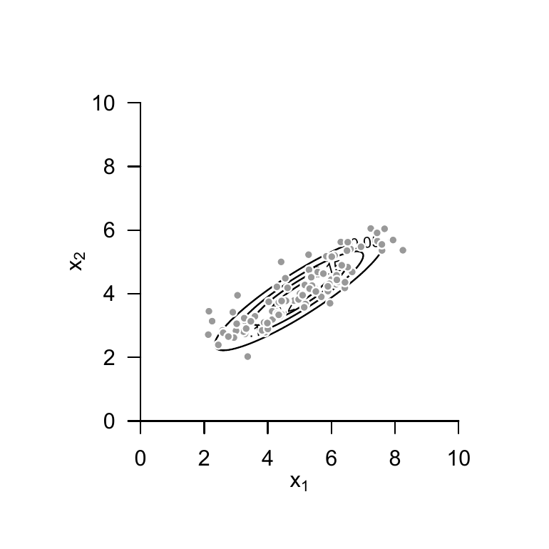
Figure 29.2: Construction of a bivariate normal distribution.
29.2 Definition of multivariate normal distributions
We now formally introduce the multivariate normal distribution and state first properties. We use the following definition for this purpose.
Definition 29.2\(\xi\) be an \(n\)-dimensional random vector with outcome space \(\mathbb{R}^n\) and PDF \[\begin{equation}
p : \mathbb{R}^n \to \mathbb{R}_{>0},\, x \mapsto p(x) := (2\pi)^{-\frac{n}{2}}|\Sigma|^{-\frac{1}{2}}\exp\left(-\frac{1}{2}(x-\mu)^T \Sigma^{-1} (x-\mu)\right).
\end{equation}\] Then we say that \(\xi\) follows a multivariate (or \(n\)-dimensional) normal distribution with expectation parameter\(\mu \in \mathbb{R}^n\) and positive-definite covariance-matrix parameter\(\Sigma \in \mathbb{R}^{n \times n}\) and call \(\xi\) a (multivariately) normally distributed random vector. We abbreviate this by \(\xi \sim N(\mu,\Sigma)\). We denote the PDF of a multivariately normally distributed random vector by \[\begin{equation}
N(x;\mu,\Sigma):= (2\pi)^{-\frac{n}{2}}|\Sigma|^{-\frac{1}{2}}\exp\left(-\frac{1}{2}(x-\mu)^T \Sigma^{-1} (x-\mu)\right).
\end{equation}\]
Example 29.2 (Bivariate normal distributions)Figure 29.3 A, B, and C show the isocontours of the PDFs of bivariately normally distributed random vectors for \(\mu = (1,1)^T\) and \[\begin{equation}
\Sigma_A := \begin{pmatrix} 0.20 & 0.15 \\ 0.15 & 0.20 \end{pmatrix}, \quad
\Sigma_B := \begin{pmatrix} 0.20 & 0.00 \\ 0.00 & 0.20 \end{pmatrix}, \quad
\Sigma_C := \begin{pmatrix} 0.20 & -0.15 \\ -0.15 & 0.20 \end{pmatrix}
\end{equation}\] respectively. Figure 29.4 A, B, and C each show 200 realizations of the corresponding random vectors.
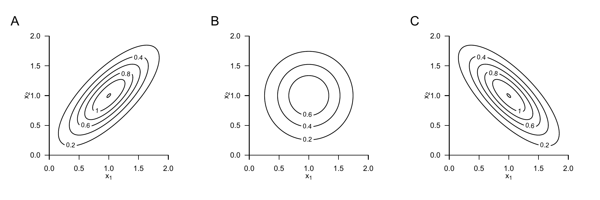
Figure 29.3: Probability density functions of bivariate normal distributions.
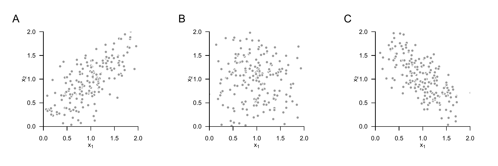
Figure 29.4: Realizations of bivariately normally distributed random vectors.
Without proof, we note that, as in the case of a univariately normally distributed random variable, the expectation and the covariance matrix of a normally distributed random vector are given by the corresponding parameters.
Theorem 29.2 (Expectation and covariance matrix of normally distributed random vectors) Let \(\xi \sim N(\mu,\Sigma)\) be a multivariately normally distributed random vector with expectation parameter \(\mu \in \mathbb{R}^n\) and covariance-matrix parameter \(\Sigma \in \mathbb{R}^{n \times n} \mbox{ pd}\). Then \[\begin{equation}
\mathbb{E}(\xi) = \mu \mbox{ and } \mathbb{C}(\xi) = \Sigma.
\end{equation}\]
As in the case of univariately normally distributed random variables, the parameter \(\mu \in \mathbb{R}^n\) corresponds to the value of highest probability density of the multivariate normal distribution. Analogously to the variance parameter of a univariately normally distributed random variable, the diagonal elements of \(\Sigma \in \mathbb{R}^{n \times n} \mbox{ pd}\) specify the width of the PDF with respect to the random-vector components \(\xi_1,...,\xi_n\). In general, in the case of a multivariately normally distributed random vector, the \(i,j\)th element of \(\Sigma \in \mathbb{R}^{n \times n} \mbox{ pd}\) now specifies the covariance of the random-vector components \(\xi_i\) and \(\xi_j\).
29.3 Sphericity
The following theorem is central for the basic theory of the general linear model.
Theorem 29.3 (Spherical multivariate normal distribution) For \(i = 1,...,n\), let \(N(x_i; \mu_i,\sigma^2)\) be the PDFs of \(n\) independent univariately normally distributed random variables \(\xi_1,...,\xi_n\) with \(\mu_1,...,\mu_n \in \mathbb{R}\) and \(\sigma^2 > 0\). Further, let \(N(x;\mu,\sigma^2I_n)\) be the PDF of an \(n\)-variate normally distributed random vector \(\xi\) with expectation parameter \(\mu := (\mu_1,...,\mu_n)^T \in \mathbb{R}^n\). Then \[\begin{equation}
p_\xi(x) = p_{\xi_1,...,\xi_n}(x_1,...,x_n) = \prod_{i=1}^n p_{\xi_i}(x_i)
\end{equation}\] and, in particular, \[\begin{equation}
N\left(x;\mu,\sigma^2I_n\right) = \prod_{i=1}^n N\left(x_i;\mu_i,\sigma^2\right)
\end{equation}\] for all \(x = (x_1,...,x_n)^T \in \mathbb{R}^n\).
Proof. We show the identity of the multivariate PDF \(N(x;\mu,\sigma^2 I_n)\) with the product of \(n\) univariate PDFs \(N(x_i;\mu_i,\sigma^2 I_n)\), where \(\mu_i\) is the \(i\)th entry of \(\mu \in \mathbb{R}^n\). We obtain \[\begin{align}
\begin{split}
N\left(x;\mu,\sigma^{2}I_{n} \right)
& = \left(2\pi \right)^{-\frac{n}{2}}
\left|\sigma^2 I_n \right|^{-\frac{1}{2}}
\exp\left(-\frac{1}{2}(x-\mu)^{T}(\sigma^2 I_n)^{-1}(x-\mu)\right)\\
& = \left(\prod_{i=1}^n 2\pi ^{-\frac{1}{2}} \right)
\left(\sigma^2\right)^{-\frac{n}{2}}
\exp\left(-\frac{1}{2\sigma^2}(x-\mu)^{T}(x-\mu)\right) \\
& = \left(\prod_{i=1}^n \left(2\pi\sigma^2 \right) ^{-\frac{1}{2}} \right)
\exp\left(-\frac{1}{2\sigma^2} \sum_{i=1}^n (x_i - \mu_i)^2\right) \\
& = \prod_{i=1}^n \frac{1}{\sqrt{2\pi\sigma^2}}
\prod_{i=1}^n \exp\left(-\frac{1}{2\sigma^2} (x_i - \mu_i)^2\right) \\
& = \prod_{i=1}^n \frac{1}{\sqrt{2\pi\sigma^2}}
\exp\left(-\frac{1}{2\sigma^2} (x_i - \mu_i)^2\right) \\
& = \prod_{i=1}^n N\left(x_i; \mu_i,\sigma^2\right).
\end{split}
\end{align}\]
A covariance-matrix parameter of the form \(\Sigma = \sigma^2 I_n\) is also called spherical, because the isocontours of the PDF of a normally distributed random vector with such a covariance-matrix parameter form spheres (for example, circles for \(n = 2\) and balls for \(n = 3\)). A multivariate normal distribution with a spherical covariance-matrix parameter is correspondingly called a spherical normal distribution. Theorem 29.3 states that the PDF of an \(n\)-dimensional normally distributed random vector with spherical covariance parameter corresponds to the joint PDF of \(n\) independent univariately normally distributed random variables, and conversely. A realization of an \(n\)-dimensional normally distributed random vector therefore corresponds to the realizations of \(n\) independent univariately normally distributed random variables, and conversely. Note that the identity of the distributions of the \(\xi_i, i = 1,...,n\) is not assumed here; in particular, their expectation parameters \(\mu_i, i = 1,...,n\) may explicitly differ.
29.4 Marginal, conditional, and joint distributions
Multivariate normal distributions have the property that all other associated distributions are also normal distributions and that their expectation and covariance-matrix parameters can be calculated from the parameters of the respective complementary distribution. Specifically, on the one hand, the univariate and multivariate marginal distributions of multivariate normal distributions are again normal distributions. On the other hand, like all multivariate distributions, multivariate normal distributions can be decomposed multiplicatively into a marginal and a conditional distribution. In particular, however, for multivariate normal distributions these distributions are again (multivariate) normal distributions whose parameters can be calculated from the parameters of the joint distribution, and conversely. We summarize the above observations formally in the following three theorems.
Theorem 29.4 (Marginal normal distributions) Let \(n := k + l\) and let \(\xi = (\xi_1,...,\xi_n)^T\) be an \(n\)-dimensional normally distributed random vector with expectation parameter \[\begin{equation}
\mu =
\left(\begin{matrix}
\mu_\upsilon \\
\mu_\zeta
\end{matrix}\right) \in \mathbb{R}^n,
\end{equation}\] with \(\mu_\upsilon \in \mathbb{R}^k\) and \(\mu_\zeta \in \mathbb{R}^l\) and covariance-matrix parameter \[\begin{equation}
\Sigma =
\left(\begin{matrix}
\Sigma_{\upsilon\upsilon} & \Sigma_{\upsilon\zeta} \\
\Sigma_{\zeta\upsilon} & \Sigma_{\zeta\zeta}
\end{matrix}\right) \in \mathbb{R}^{n \times n},
\end{equation}\] with \(\Sigma_{\upsilon\upsilon} \in \mathbb{R}^{k \times k}\), \(\Sigma_{\upsilon\zeta} \in \mathbb{R}^{k \times l}\), \(\Sigma_{\zeta\upsilon} \in \mathbb{R}^{l \times k}\), and \(\Sigma_{\zeta\zeta} \in \mathbb{R}^{l \times l}\). Then \(\upsilon := (\xi_1,...,\xi_k)^T\) and \(\zeta := (\xi_{k+1}, ...,\xi_n)^T\) are \(k\)- and \(l\)-dimensional normally distributed random vectors, respectively, and \[\begin{equation}
\upsilon \sim N(\mu_\upsilon,\Sigma_{\upsilon\upsilon}) \mbox{ and } \zeta \sim N(\mu_\zeta,\Sigma_{\zeta\zeta}).
\end{equation}\]
The marginal distributions of a multivariate normal distribution are therefore also normal distributions, and the parameters of the marginal distributions follow from the parameters of the joint distribution. For proofs of this theorem, we refer to Mardia et al. (1979) and Anderson (2003).
Example 29.3 (Marginal normal distributions)Figure 29.5 visualizes Theorem 29.4 for the case \(n := 2, k := 1, l := 1\), \[\begin{equation}
\mu := \begin{pmatrix} 1 \\ 2 \end{pmatrix} \in \mathbb{R}^2
\mbox{ and }
\Sigma := \begin{pmatrix} 0.10 & 0.08 \\ 0.08 & 0.15 \end{pmatrix} \in \mathbb{R}^{2 \times 2}.
\end{equation}\]Figure 29.5 A shows the PDF of the bivariate random vector \(\xi\), and Figure 29.5 B and C show the PDFs of the corresponding marginal random variables \(\upsilon\) and \(\zeta\).
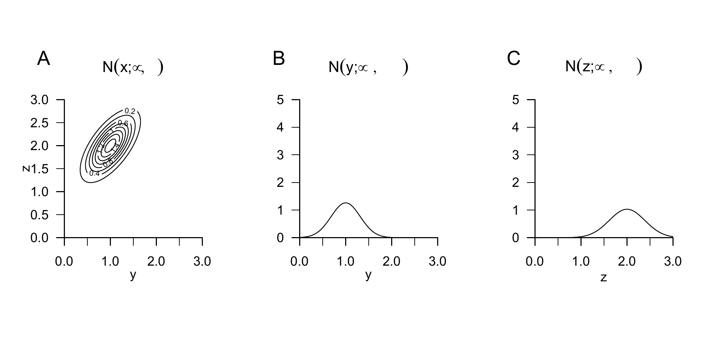
Figure 29.5: Marginal distributions of a bivariate normally distributed random vector.
Using a marginal and a conditional multivariate normal distribution, one can construct a joint multivariate normal distribution whose parameters follow from the parameters of the marginal and conditional distributions. This is the central statement of the following theorem.
Theorem 29.5 (Joint normal distributions) Let \(\xi\) be an \(m\)-dimensional normally distributed random vector with PDF \[\begin{equation}
p_\xi : \mathbb{R}^m \to \mathbb{R}_{>0},\,x\mapsto
p_\xi(x) := N(x;\mu_\xi,\Sigma_{\xi\xi}) \mbox{ with }
\mu_\xi \in \mathbb{R}^m,
\Sigma_{\xi\xi} \in \mathbb{R}^{m\times m},
\end{equation}\] let \(A\in\mathbb{R}^{n\times m}\) be a matrix, let \(b\in\mathbb{R}^n\) be a vector, and let \(\upsilon\) be an \(n\)-dimensional conditionally normally distributed random vector with conditional PDF \[\begin{equation}
p_{\upsilon|\xi}(\cdot|x) : \mathbb{R}^n \to \mathbb{R}_{>0},\, y\mapsto
p_{\upsilon|\xi}(y|x) := N(y;A\xi+b,\Sigma_{\upsilon\upsilon}) \mbox{ with }
\Sigma_{\upsilon\upsilon} \in \mathbb{R}^{n\times n}.
\end{equation}\] Then the \(m+n\)-dimensional random vector \((\xi,\upsilon)^T\) is normally distributed with (joint) PDF \[\begin{equation}\label{eq:gauss_joint}
p_{\xi,\upsilon} : \mathbb{R}^{m+n} \to \mathbb{R}_{>0},\, \begin{pmatrix} x \\ y \end{pmatrix} \mapsto
p_{\xi,\upsilon}\left(\begin{pmatrix} x \\ y \end{pmatrix}\right) = N\left(\begin{pmatrix} x \\ y \end{pmatrix};
\mu_{\xi,\upsilon}, \Sigma_{\xi,\upsilon} \right),
\end{equation}\] with \(\mu_{\xi,\upsilon} \in \mathbb{R}^{m+n}\) and \(\Sigma_{\xi,\upsilon} \in \mathbb{R}^{m+n \times m+n}\) and, in particular, \[\begin{equation}
\mu_{\xi,\upsilon} = \left( \begin{matrix} \mu_\xi \\ A\mu_\xi + b \end{matrix} \right)
\mbox{ and }
\Sigma_{\xi,\upsilon} = \left(\begin{matrix} \Sigma_{\xi\xi} & \Sigma_{\xi\xi}A^T \\ A\Sigma_{\xi\xi} & \Sigma_{\upsilon\upsilon} + A\Sigma_{\xi\xi}A^T \end{matrix} \right).
\end{equation}\]
The parameters of the joint distribution therefore follow as linear-affine transformations of the parameters of the inducing marginal and conditional distributions.
Example 29.4 (Joint normal distributions)Figure 29.6 visualizes Theorem 29.5 for the case \(m := 1, n := 1, \mu_\xi := 1, \Sigma_{\xi\xi} := 0.2, A := 1, b := 1\) and \(\Sigma_{\upsilon\upsilon} := 0.1\). Figure 29.6 A shows the PDF of the random variable \(\xi\), Figure 29.6 B shows the PDF of the conditional distribution of the random variable \(\upsilon\) given \(\xi\), and Figure 29.6 C finally shows the PDFs of the induced bivariate random vector \((\xi,\upsilon)\).
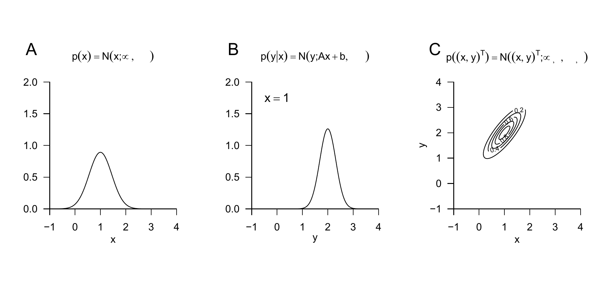
Figure 29.6: Joint distributions of a marginal and a normally distributed random variable conditional on it.
The definition of a multivariate normal distribution further makes it possible to determine the conditional distributions of all components of the corresponding random vector directly using the parameters of the multivariate normal distribution. This is the central statement of the following theorem.
Theorem 29.6 (Conditional normal distributions) Let \((\xi,\upsilon)\) be an \(m+n\)-dimensional normally distributed random vector with PDF \[\begin{equation}
p_{\xi,\upsilon} : \mathbb{R}^{m + n} \to \mathbb{R}_{>0}, \begin{pmatrix} x \\ y \end{pmatrix}
\mapsto p_{\xi,\upsilon}\left(\begin{pmatrix} x \\ y \end{pmatrix} \right)
:= N\left(\begin{pmatrix} x \\ y \end{pmatrix}; \mu_{\xi,\upsilon}, \Sigma_{\xi,\upsilon}\right),
\end{equation}\] with \[\begin{equation}
\mu_{\xi,\upsilon}
= \left(\begin{matrix} \mu_\xi \\ \mu_\upsilon \end{matrix} \right),
\Sigma_{\xi,\upsilon} = \left(\begin{matrix} \Sigma_{\xi\xi} & \Sigma_{\xi\upsilon} \\ \Sigma_{\upsilon\xi} & \Sigma_{\upsilon\upsilon} \end{matrix} \right),
\end{equation}\] with \(x,\mu_\xi \in \mathbb{R}^m, y,\mu_\upsilon\in\mathbb{R}^n\) and \(\Sigma_{\xi\xi} \in \mathbb{R}^{m\times m}, \Sigma_{\xi\upsilon} \in
\mathbb{R}^{m\times n}, \Sigma_{\upsilon\upsilon} \in \mathbb{R}^{n \times n}\). Then the conditional distribution of \(\xi\) given \(\upsilon\) is an \(m\)-dimensional normal distribution with conditional PDF \[\begin{equation}
p_{\xi|\upsilon}(\cdot|y) : \mathbb{R}^m \to \mathbb{R}_{>0}, x \mapsto p_{\xi|\upsilon}(x|y) :=
N(x;\mu_{\xi|\upsilon},\Sigma_{\xi|\upsilon})
\end{equation}\] with \[\begin{equation}\label{eq:gauss_cond_exp}
\mu_{\xi|\upsilon} = \mu_\xi + \Sigma_{\xi\upsilon}\Sigma_{\upsilon\upsilon}^{-1}(y-\mu_\upsilon) \in \mathbb{R}^m
\end{equation}\] and \[\begin{equation}\label{eq:gauss_cond_var}
\Sigma_{\xi|\upsilon} = \Sigma_{\xi\xi} - \Sigma_{\xi\upsilon}\Sigma_{\upsilon\upsilon}^{-1}\Sigma_{\upsilon\xi} \in \mathbb{R}^{m\times m}.
\end{equation}\]
Together with Theorem 29.5 and Theorem 29.4, the parameters of conditional and marginal normal distributions can therefore be determined from the parameters of the complementary conditional and marginal normal distributions.
Example 29.5 (Conditional normal distributions)Figure 29.7 visualizes Theorem 29.6 for the case \(m := 2, n := 1\), \[\begin{equation}
\mu := \begin{pmatrix} 1 \\ 2 \end{pmatrix}
\mbox{ and }
\Sigma := \begin{pmatrix} 0.12 & 0.09 \\ 0.09 & 0.12 \end{pmatrix}.
\end{equation}\] Here Figure 29.7 A shows the PDF of the bivariate random vector \((\xi,\upsilon)^T\), and Figure 29.7 B and C show the PDF of the conditional distribution of the random variable \(\xi\) given \(\upsilon = 1.5\) and \(\upsilon = 2.8\), respectively.
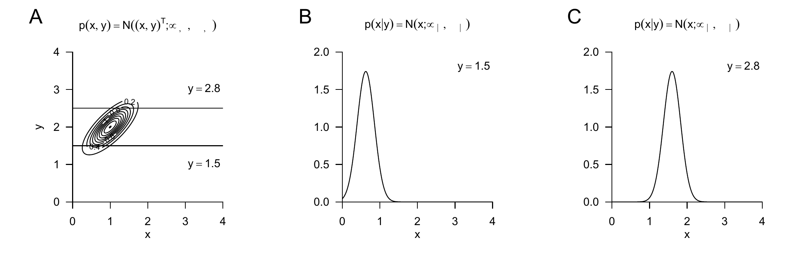
Figure 29.7: Conditional normal distributions.
29.5 Multivariate transformations
In this section, we collect some results on the distributions of transformed normally distributed random vectors. We omit proofs.
Theorem 29.7 (Invertible linear transformation of a normally distributed random vector) Let \(\xi \sim N(\mu_\xi,\Sigma_\xi)\) be a normally distributed \(n\)-dimensional random vector and let \(\zeta := A\xi\) with an invertible matrix \(A \in \mathbb{R}^{n \times n}\). Then \[\begin{equation}
\zeta \sim N\left(\mu_\zeta, \Sigma_\zeta\right)
\mbox{ with }
\mu_\zeta = A\mu_\xi \mbox{ and }
\Sigma_\zeta = A\Sigma_\xi A^T.
\end{equation}\]
By Theorem 29.7, the invertible linear transformation of a multivariately normally distributed random vector therefore again yields a multivariately normally distributed random vector, and the parameters of the distribution of this normally distributed random vector follow from the parameters of the distribution of the original random vector and the transformation matrix.
Example 29.6 (Invertible linear transformation of a bivariate normal distribution) As an example, we consider the invertible linear transformation of a bivariately normally distributed random vector \(\xi\). Let \[\begin{equation}
\mu_\xi := \begin{pmatrix} 1 \\ 1 \end{pmatrix}
\mbox{ and }
\Sigma_\xi := \begin{pmatrix} 0.20 & 0.15 \\ 0.15 & 0.20 \end{pmatrix}
\end{equation}\] be the expectation and covariance-matrix parameters of \(\xi\), respectively, and let \[\begin{equation}
A := \begin{pmatrix} -2 & 1 \\ - 1 & 2 \end{pmatrix}
\end{equation}\] be the transformation matrix. Since \(|A| = -3 \neq 0\), \(A\) is invertible, and by Theorem 29.7, \[\begin{equation}
\zeta \sim N(\mu_\zeta,\Sigma_\zeta) \mbox{ with }
\mu_\zeta = A\mu_\xi = \begin{pmatrix} -1 \\ 1 \end{pmatrix}
\mbox{ and }
A\Sigma_\xi A^T = \begin{pmatrix} 0.40 & 0.05 \\ 0.05 & 0.40 \end{pmatrix}.
\end{equation}\]Figure 29.8 A shows isocontours of the PDF of \(\xi\) and realizations \(x^{(i)} \in \mathbb{R}^2\) of \(\xi\) for \(i = 1,...,50\). Figure 29.8 B shows the transformed realizations \(z^{(i)} = Ax^{(i)} \in \mathbb{R}^{2}\) of \(\zeta\) as well as the isocontours of the PDF of \(\zeta\) according to Theorem 29.7.
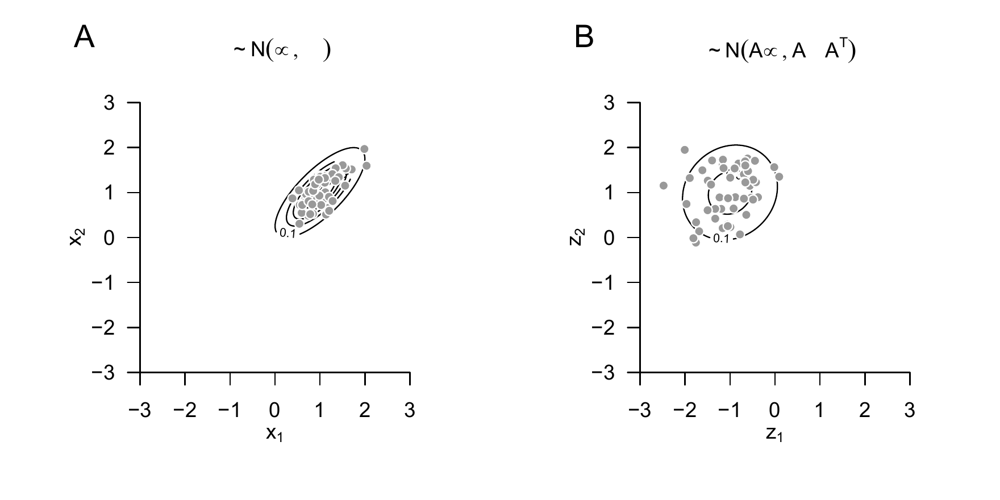
Figure 29.8: Invertible linear transformation of a normally distributed random vector.
The fact that a linearly transformed normally distributed random vector is again normally distributed and that the parameters of the distribution of the transformed random vector can be determined from the parameters of the distribution of the original random vector and the transformation parameters remains true in the case of a not necessarily invertible linear transformation and also in the case of a not necessarily invertible linear-affine transformation. This is the statement of the following central theorem.
Theorem 29.8 (Linear-affine transformation of a normally distributed random vector) Let \(\xi \sim N(\mu_\xi,\Sigma_\xi)\) be a normally distributed \(n\)-dimensional random vector and let \[\begin{equation}
\zeta := Ax + b \mbox{ with } A \in \mathbb{R}^{m \times n} \mbox{ and } b \in \mathbb{R}^m.
\end{equation}\] Then \[\begin{equation}
\zeta \sim N(\mu_\zeta, \Sigma_\zeta)
\mbox{ with }
\mu_\zeta = A\mu + b \in \mathbb{R}^m \mbox{ and }
\Sigma_\zeta = A\Sigma A^T \in \mathbb{R}^{m \times m}.
\end{equation}\]
29.6 Transformations of normally distributed random variables
In this section, we discuss six transformations of normally distributed random variables that play central roles in frequentist inference and are applications of the transformation theorems introduced in Chapter 28. Our statements are usually of the general form “If \(\xi_i, i = 1,...,n\) are independent and identically normally distributed random variables and \(\upsilon := f(\xi_1,...,\xi_n)\) is a transformation of these random variables, then the PDF of \(\upsilon\) is given by the formula \(p_\upsilon := \{\mbox{formula}\}\), and the distribution of \(\upsilon\) is called distribution name.” Statements of this form are central for frequentist inference because, first, the central limit theorems justify the assumption of additively independent normally distributed disturbance variables, and therefore normally distributed data; second, as we will see in frequentist inference, estimators and statistics are transformations of random variables; and third, quality criteria for parameter estimators, confidence intervals, and hypothesis tests in frequentist inference are characterized and justified by the distributions of the respective estimators and statistics.
Summation transformation
In this section, we consider the resulting distributions under summation and sample-mean formation of independently and identically normally distributed random variables. Specifically, Theorem 29.9 states that the sum of independently normally distributed random variables is again normally distributed and gives the parameters of this distribution, while Theorem 29.10 states that the sample mean of independently normally distributed random variables is again normally distributed and gives the parameters of this distribution.
Theorem 29.9 (Summation transformation) For \(i = 1,...,n\), let \(\xi_i \sim N(\mu_i,\sigma^2_i)\) be independent normally distributed random variables. Then, for the sum \(\upsilon := \sum_{i=1}^n \xi_i\), \[\begin{equation}
\upsilon \sim N\left(\sum_{i=1}^n \mu_i, \sum_{i=1}^n \sigma^2_i\right).
\end{equation}\] For independent and identically normally distributed random variables \(\xi_i \sim N(\mu,\sigma^2)\), it consequently follows that \[\begin{equation}
\upsilon \sim N(n\mu, n \sigma^2).
\end{equation}\]
Proof. Using Theorem 28.6, we sketch that for \(\xi_1 \sim N(\mu_1,\sigma^2_1)\), \(\xi_2 \sim N(\mu_2,\sigma^2_2)\), and \(\upsilon := \xi_1 + \xi_2\), we have \(\upsilon \sim N(\mu_1 + \mu_2,\sigma_1^2 + \sigma_2^2)\). For \(n > 2\), the theorem then follows by iteration. With the definition of the PDF of the normal distribution, we first obtain \[\begin{align}
\begin{split}
p_\upsilon(y)
& = \int_{-\infty}^\infty p_{\xi_1}(x_1)p_{\xi_2}(y - x_1)\,dx_1
\\
& = \int_{-\infty}^\infty
\frac{1}{\sqrt{2 \pi} \sigma_1} \exp\left(-\frac{1}{2}\left(\frac{x_1 - \mu_1}{\sigma_1}\right)^2\right)
\frac{1}{\sqrt{2 \pi} \sigma_2} \exp\left(-\frac{1}{2}\left(\frac{y - x_1 - \mu_2}{\sigma_2}\right)^2\right)
\,dx_1
\\
& = \int_{-\infty}^\infty
\frac{1}{2 \pi \sigma_1\sigma_2}\exp
\left(
-\frac{1}{2}\left(\frac{x_1 - \mu_1}{\sigma_1}\right)^2
-\frac{1}{2}\left(\frac{y - x_1 - \mu_2}{\sigma_2}\right)^2
\right)
\,dx_1 .
\\
\end{split}
\end{align}\] With some algebraic effort, one obtains the identity \[\begin{multline}
-\frac{1}{2}\left(\frac{x_1 - \mu_1}{\sigma_1}\right)^2
-\frac{1}{2}\left(\frac{y - x_1 - \mu_2}{\sigma_2}\right)^2
=
-\frac{(y - \mu_1 - \mu_2)^2}
{2(\sigma_1^2 + \sigma_2^2)}
-\frac{((\sigma_1^2 + \sigma_2^2)x_1 -\sigma_1^2y + \mu_2 \sigma_1^2 - \mu_1 \sigma_2^2)^2}
{2\sigma_1^2\sigma_2^2(\sigma_1^2 + \sigma_2^2)},
\end{multline}\] so that we further have \[\begin{align}
\begin{split}
p_\upsilon(y)
& = \int_{-\infty}^\infty
\frac{1}{2 \pi \sigma_1\sigma_2}
\exp\left(
-\frac{(y - \mu_1 - \mu_2)^2}
{2(\sigma_1^2 + \sigma_2^2)}
-\frac{((\sigma_1^2 + \sigma_2^2)x_1 -\sigma_1^2y + \mu_2 \sigma_1^2 - \mu_1 \sigma_2^2)^2}
{2\sigma_1^2\sigma_2^2(\sigma_1^2 + \sigma_2^2)}
\right)
\,dx_1
\\
& = \int_{-\infty}^\infty
\frac{1}{2 \pi \sigma_1\sigma_2}
\exp\left(
-\frac{(y - \mu_1 - \mu_2)^2}
{2(\sigma_1^2 + \sigma_2^2)}
\right)
\exp\left(
-\frac{((\sigma_1^2 + \sigma_2^2)x_1 -\sigma_1^2y + \mu_2 \sigma_1^2 - \mu_1 \sigma_2^2)^2}
{2\sigma_1^2\sigma_2^2(\sigma_1^2 + \sigma_2^2)}
\right)
\,dx_1
\\
& = \frac{1}{2 \pi \sigma_1\sigma_2}
\exp\left(
-\frac{(y - \mu_1 - \mu_2)^2}
{2(\sigma_1^2 + \sigma_2^2)}
\right)
\int_{-\infty}^\infty
\exp\left(
-\frac{((\sigma_1^2 + \sigma_2^2)x_1 -\sigma_1^2y + \mu_2 \sigma_1^2 - \mu_1 \sigma_2^2)^2}
{2\sigma_1^2\sigma_2^2(\sigma_1^2 + \sigma_2^2)}
\right)
\,dx_1.
\end{split}
\end{align}\] For the remaining integral, one can show by integration through substitution that \[\begin{equation}
\int_{-\infty}^\infty
\exp\left(
-\frac{((\sigma_1^2 + \sigma_2^2)x_1 -\sigma_1^2y + \mu_2 \sigma_1^2 - \mu_1 \sigma_2^2)^2}
{2\sigma_1^2\sigma_2^2(\sigma_1^2 + \sigma_2^2)}
\right)
\,dx_1
= \frac{\sqrt{2\pi}\sigma_1\sigma_2}{\sqrt{\sigma_1^2 + \sigma_2^2}}.
\end{equation}\] Thus \[\begin{align}
\begin{split}
p_\upsilon(y)
& = \frac{1}{2 \pi \sigma_1\sigma_2}
\frac{\sqrt{2\pi}\sigma_1\sigma_2}{\sqrt{\sigma_1^2 + \sigma_2^2}}
\exp\left(
-\frac{(y - \mu_1 - \mu_2)^2}
{2(\sigma_1^2 + \sigma_2^2)}
\right)
\\
& = \frac{(2\pi)^{-1}(2\pi)^2}{\sqrt{\sigma_1^2 + \sigma_2^2}}
\exp\left(
-\frac{(y - \mu_1 - \mu_2)^2}
{2(\sigma_1^2 + \sigma_2^2)}
\right)
\\
& = \frac{1}{\sqrt{2\pi}\sqrt{\sigma_1^2 + \sigma_2^2}}
\exp\left(
-\frac{(y - \mu_1 - \mu_2)^2}
{2(\sigma_1^2 + \sigma_2^2)}
\right).
\end{split}
\end{align}\] Finally, it follows that \[\begin{align}
\begin{split}
p_\upsilon(y)
& = \frac{1}{\sqrt{2\pi(\sigma_1^2 + \sigma_2^2)}}
\exp\left(-\frac{1}{2(\sigma_1^2 + \sigma_2^2)}\left(y - (\mu_1 + \mu_2)\right)^2\right)
= N(y; \mu_1 + \mu_2, \sigma_1^2 + \sigma_2^2)
\end{split}
\end{align}\] A simpler approach probably follows after Fourier transformation of the PDF in the sense of the so-called characteristic function of a random variable. In this case, the convolution of the PDFs would correspond to multiplication of the characteristic functions.
Figure 29.9: Summation of normally distributed random variables.
Sample-mean transformation
Theorem 29.10 (Sample-mean transformation) For \(i = 1,...,n\), let \(\xi_i \sim N(\mu,\sigma^2)\) be independent and identically normally distributed random variables. Then, for the sample mean \(\bar{\xi}_n := \frac{1}{n}\sum_{i=1}^n \xi_i\), \[\begin{equation}
\bar{\xi}_n \sim N\left(\mu, \frac{\sigma^2}{n}\right).
\end{equation}\]
Proof. We first note that, by the theorem on the sum of independent normally distributed random variables, \(\bar{\xi}_n = \frac{1}{n}\upsilon\) with \(\upsilon := \sum_{i=1}^n \xi_i \sim N(n\mu,n\sigma^2)\). Substitution into Theorem 28.3 then yields \[\begin{align}
\begin{split}
p_{\bar{\xi}_n}(\bar{x}_n)
& = \frac{1}{|1/n|}N\left(n\bar{x}_n; n\mu , n\sigma^2 \right) \\
& = \frac{n}{\sqrt{2\pi n\sigma^2}}\exp\left(-\frac{1}{2n\sigma^2}
\left(n\bar{x}_n - n\mu\right)^2 \right) \\
& = \frac{n}{\sqrt{2\pi n\sigma^2}}\exp\left(-\frac{1}{2n\sigma^2}
\left(n\bar{x}_n - n\mu\right)^2 \right) \\
& = nn^{-\frac{1}{2}}\frac{1}{\sqrt{2\pi\sigma^2}}
\exp\left(
-\frac{(n\bar{x}_n)^2}{2n\sigma^2}
+ \frac{2(n\bar{x}_n)(n\mu)}{2n\sigma^2}
- \frac{(n\mu)^2}{2n\sigma^2}
\right) \\
& = \sqrt{n}\frac{1}{\sqrt{2\pi\sigma^2}}
\exp\left(
-\frac{n\bar{x}_n^2}{2\sigma^2}
+ \frac{2n\bar{x}_n\mu}{2\sigma^2}
- \frac{n\mu^2}{2\sigma^2}
\right) \\
& = \frac{1}{1/\sqrt{n}}\frac{1}{\sqrt{2\pi\sigma^2}}
\exp\left(
-\frac{\bar{x}_n^2}{2(\sigma^2/n)}
+ \frac{2\bar{x}_n\mu}{2(\sigma^2/n)}
- \frac{\mu^2}{2(\sigma^2/n)}
\right) \\
& = \frac{1}{\sqrt{2\pi(\sigma^2/n)}}
\exp\left(-\frac{1}{2(\sigma^2/n)}
(\bar{x}_n - \mu)^2
\right) \\
& = N\left(\bar{x}_n;\mu,\sigma^2/n \right)
\end{split}
\end{align}\]
Important applications of Theorem 29.10 are the analysis of expectation estimators in point estimation and the generalization of the central limit theorem after Lindeberg and Levy mentioned in Equation 27.2. We visualize Theorem 29.10 by example in Figure 29.10.
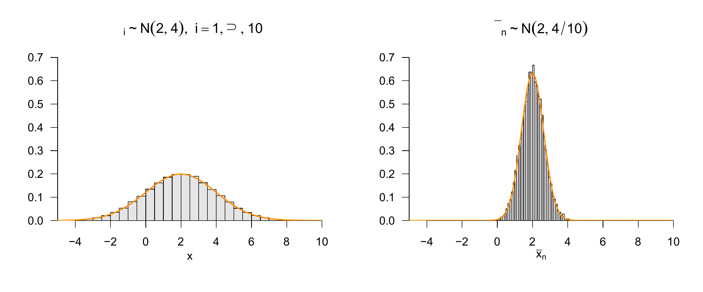
Figure 29.10: Sample-mean formation for normally distributed random variables.
\(Z\)-transformation
Theorem 29.11 states that subtracting the expectation parameter and simultaneously dividing by the square root of the variance parameter transforms the distribution of a normally distributed random variable into a standard normal distribution.
Theorem 29.11 (\(Z\)-transformation) Let \(\upsilon \sim N(\mu,\sigma^2)\) be a normally distributed random variable. Then the random variable \[\begin{equation}
Z := \frac{\upsilon - \mu}{\sigma}
\end{equation}\] is a standard normally distributed random variable, that is, \(Z \sim N(0,1)\).
Proof. We use Theorem 28.3. To do so, we first note that the \(Z\)-transformation corresponds to a function of the form \[\begin{equation}
f(\upsilon) := \frac{\upsilon - \mu}{\sigma} =: Z.
\end{equation}\] We further observe that the inverse function of \(f\) is given by \[\begin{equation}
f^{-1}(Z) := \sigma Z + \mu,
\end{equation}\] because for all \(z \in \mathbb{R}\) with \(z = {y - \mu}{\sigma}\), \[\begin{equation}
\zeta^{-1}(z)
= \zeta^{-1}\left(\frac{y - \mu}{\sigma}\right)
= \frac{\sigma(y- \mu)}{\sigma} + \mu
= y - \mu + \mu
= y.
\end{equation}\] Finally, we observe that the derivative \(f'\) of \(f\) is \[\begin{equation}
f'(y)
= \frac{d}{dy}\left(\frac{y - \mu}{\sigma} \right)
= \frac{d}{dy}\left(\frac{y}{\sigma} -\frac{\mu}{\sigma} \right)
= \frac{1}{\sigma}.
\end{equation}\] Substitution into Theorem 28.3 then yields \[\begin{align}
\begin{split}
p_Z(z)
& = \frac{1}{|1/\sigma|}N\left(\sigma z + \mu; \mu , \sigma^2 \right) \\
& = \frac{1}{1/\sqrt{\sigma^2}}\frac{1}{\sqrt{2\pi\sigma^2}}\exp\left(-\frac{1}{2\sigma^2}\left(\sigma z + \mu - \mu\right)^2 \right) \\
& = \frac{\sqrt{\sigma^2}}{\sqrt{2\pi\sigma^2}}\exp\left(-\frac{1}{2\sigma^2}\sigma^2 z^2\right)\\
& = \frac{1}{\sqrt{2\pi}}\exp\left(-\frac{1}{2} z^2\right)\\
& = N(z;0,1)
\end{split}
\end{align}\] and hence \(Z \sim N(0,1)\).
Important applications of Theorem 29.11 include the frequently used standardization of normally distributed random variables in the sense of so-called \(Z\)-values (\(Z\)-scores), the \(Z\) confidence-interval statistic, and the \(Z\) test statistic. We visualize Theorem 29.11 by example in Figure 29.11.
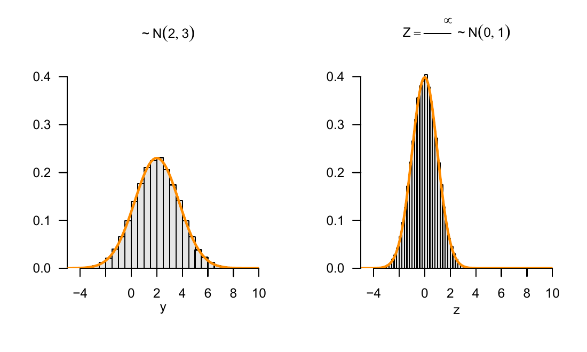
Figure 29.11: \(Z\)-transformation of normally distributed random variables.
\(\chi^2\)-transformation
With the \(\chi^2\)-transformation, we now introduce a first transformation of independent and identically normally distributed random variables that does not again lead to a normal distribution. Specifically, Theorem 29.12 states that the sum of squared independent standard normally distributed random variables is a \(\chi^2\)-distributed random variable. To do so, we first recall the concept of a \(\chi^2\) random variable as a special case of the gamma random variables considered in Chapter 21 (cf. Definition 21.10).
Definition 29.3 (\(\chi^2\) random variable) Let \(U\) be a random variable with outcome space \(\mathbb{R}_{>0}\) and PDF \[\begin{equation}
p : \mathbb{R}_{>0} \to \mathbb{R}_{>0},
u \mapsto p(u)
:= \frac{1}{\Gamma\left(\frac{n}{2}\right)2^{\frac{n}{2}}}
u^{\frac{n}{2}-1}\exp\left(-\frac{1}{2}u\right),
\end{equation}\] where \(\Gamma\) denotes the gamma function. Then we say that \(U\) follows a \(\chi^2\) distribution with degrees-of-freedom parameter \(n\) and call \(U\) a \(\chi^2\) random variable with degrees-of-freedom parameter \(n\). We abbreviate this by \(U \sim \chi^2(n)\). We denote the PDF of a \(\chi^2\) random variable by \[\begin{equation}
\chi^2(u;n) :=
\frac{1}{\Gamma\left(\frac{n}{2}\right)2^{\frac{n}{2}}}
u^{\frac{n}{2}-1}\exp\left(-\frac{1}{2}u\right).
\end{equation}\]
Recall that the PDF of the \(\chi^2\) distribution corresponds to the PDF \(G\left(u;\frac{n}{2},2\right)\) of a gamma distribution. In Figure 29.12, we visualize some PDFs of \(\chi^2\) random variables by example. We observe that, as \(n\) increases, \(\chi^2(u;n)\) broadens and probability mass is shifted to larger values of \(u\).
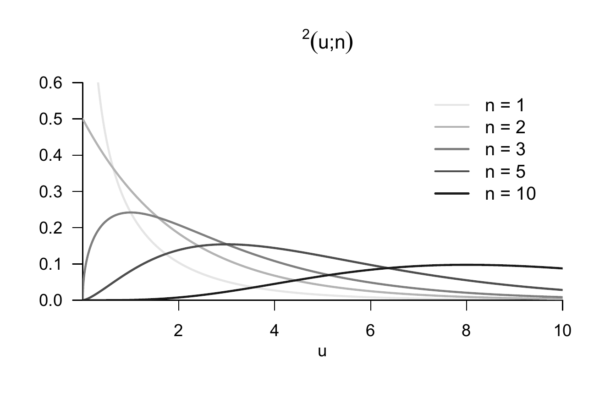
Figure 29.12: PDFs of \(\chi^2\) random variables.
Theorem 29.12 (\(\chi^2\)-transformation) Let \(Z_1,...,Z_n \sim N(0,1)\) be independent and identically standard normally distributed random variables. Then the random variable \[\begin{equation}
U := \sum_{i=1}^n Z_i^2
\end{equation}\] is a \(\chi^2\)-distributed random variable with degrees-of-freedom parameter \(n\), that is, \(U \sim \chi^2(n)\). In particular, for \(Z \sim N(0,1)\) and \(U := Z^2\), we have \(U \sim \chi^2(1)\).
Proof. We show the theorem only for the case \(n := 1\) using Theorem 28.4. According to that theorem, the PDF of a random variable \(U := f(Z)\) that results from the transformation of a random variable \(Z\) with PDF \(p_\zeta\) by a piecewise bijective mapping is given by \[\begin{equation}\label{eq:piecewise_pdf_transform}
p_U(u) = \sum_{i=1}^k 1_{\mathcal{U}_i} \frac{1}{|f'_i(f_i^{-1}(u))|}p_\zeta\left(f_i^{-1} (u)\right).
\end{equation}\] We define \[\begin{equation}
\mathcal{U}_1 := ]-\infty,0[,
\mathcal{U}_2 := ]0,\infty[, \mbox{ and }
\mathcal{U}_i := \mathbb{R}_{>0} \mbox{ for } i = 1,2,
\end{equation}\] as well as \[\begin{equation}
f_i : \mathcal{Z}_i \to \mathcal{U}_i, x \mapsto f_i(z) := z^2 =: u \mbox{ for } i = 1,2.
\end{equation}\] The derivative and the inverse function of the \(f_i\) are \[\begin{equation}
f_i' : \mathcal{Z}_i \to \mathcal{Z}_i, x \mapsto f_i'(z) = 2z \mbox{ for } i = 1,2,
\end{equation}\] and \[\begin{equation}
f_1^{-1} : \mathcal{U}_1 \to \mathcal{U}_1, u \mapsto f_1^{-1}(u) = - \sqrt{u}
\mbox{ and }
f_2^{-1} : \mathcal{U}_2 \to \mathcal{U}_2, u \mapsto f_2^{-1}(u) = \sqrt{u},
\end{equation}\] respectively. Substitution then gives \[\begin{align}
\begin{split}
p_U(u)
& = 1_{\mathcal{U}_1}(u) \frac{1}{|f'_1(f_1^{-1}(u))|}p_\zeta\left(f_1^{-1} (u)\right) +
1_{\mathcal{U}_2}(u) \frac{1}{|f'_2(f_2^{-1}(u))|}p_\zeta\left(f_2^{-1} (u)\right) \\
& = \frac{1}{|2(-\sqrt{u})|}\frac{1}{\sqrt{2\pi}}\exp\left(-\frac{1}{2}(-\sqrt{u})^2\right) +
\frac{1}{|2( \sqrt{u})|}\frac{1}{\sqrt{2\pi}}\exp\left(-\frac{1}{2}( \sqrt{u})^2\right) \\
& = \frac{1}{2\sqrt{u}}\frac{1}{\sqrt{2\pi}}\exp\left(-\frac{1}{2}u\right) +
\frac{1}{2\sqrt{u}}\frac{1}{\sqrt{2\pi}}\exp\left(-\frac{1}{2}u\right)\\
& = \frac{1}{\sqrt{2\pi}}\frac{1}{\sqrt{u}}\exp\left(-\frac{1}{2}u\right).
\end{split}
\end{align}\] On the other hand, with \(\Gamma\left(\frac{1}{2}\right) = \sqrt{\pi}\), the PDF of a \(\chi^2\) random variable \(U\) with \(n = 1\) is given by \[\begin{equation}
\frac{1}{\Gamma\left(\frac{1}{2}\right)2^{\frac{1}{2}}} u^{\frac{1}{2}-1}\exp\left(-\frac{1}{2}u\right)
= \frac{1}{\sqrt{2\pi}}\frac{1}{\sqrt{u}}\exp\left(-\frac{1}{2}u\right).
\end{equation}\] Thus, if \(Z \sim N(0,1)\), then \(U := Z^2 \sim \chi^2(1)\).
Important applications are the \(U\) confidence-interval statistic and the \(t\) and \(F\) random variables introduced below. We visualize Theorem 29.12 by example in Figure 29.13.
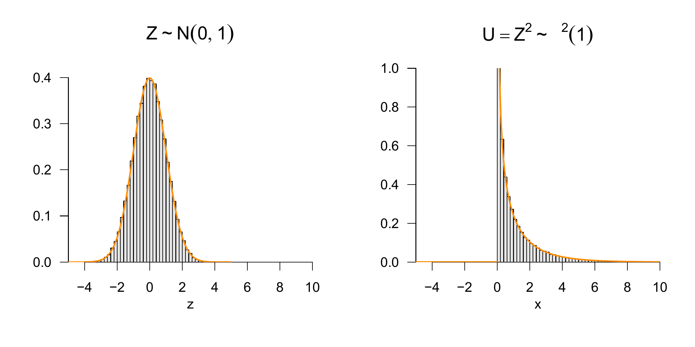
Figure 29.13: \(\chi^2\)-transformation of normally distributed random variables.
\(T\)-transformation
The theorem considered in this section goes back to Student (1908) and is the central and style-defining result in the development of frequentist inference in the first half of the twentieth century. Hald (2007) and Zabell (2008) provide a historical overview. The central Theorem 29.13 states that the random variable obtained by dividing a standard normally distributed random variable by the square root of a \(\chi^2\)-distributed random variable divided by an \(n\) is a \(t\)-distributed random variable. A \(t\)-distributed random variable is defined as follows.
Definition 29.4 (\(t\) random variable) Let \(T\) be a random variable with outcome space \(\mathbb{R}\) and PDF \[\begin{equation}
p : \mathbb{R} \to \mathbb{R}_{>0}, t \mapsto p(t)
:= \frac{\Gamma\left(\frac{n+1}{2}\right)}{\sqrt{n\pi}\Gamma\left(\frac{n}{2}\right)}
\left(1 + \frac{t^2}{n} \right)^{-\frac{n+1}{2}},
\end{equation}\] where \(\Gamma\) denotes the gamma function. Then we say that \(T\) follows a \(t\) distribution with degrees-of-freedom parameter \(n\) and call \(T\) a \(t\) random variable with degrees-of-freedom parameter \(n\). We abbreviate this by \(T \sim t(n)\). We denote the PDF of a \(t\) random variable by \[\begin{equation}
T(t;n) := \frac{\Gamma\left(\frac{n+1}{2}\right)}{\sqrt{n\pi}\Gamma\left(\frac{n}{2}\right)}
\left(1 + \frac{t^2}{n} \right)^{-\frac{n+1}{2}}.
\end{equation}\]
In Figure 29.14, we visualize some PDFs of \(t\) random variables by example. We observe that the \(t\) distribution is always symmetric around \(0\) and that increasing \(n\) shifts probability mass from the tails to the center. We note that from about \(n = 30\) onward, \(T(t;n) \approx N(0,1)\).
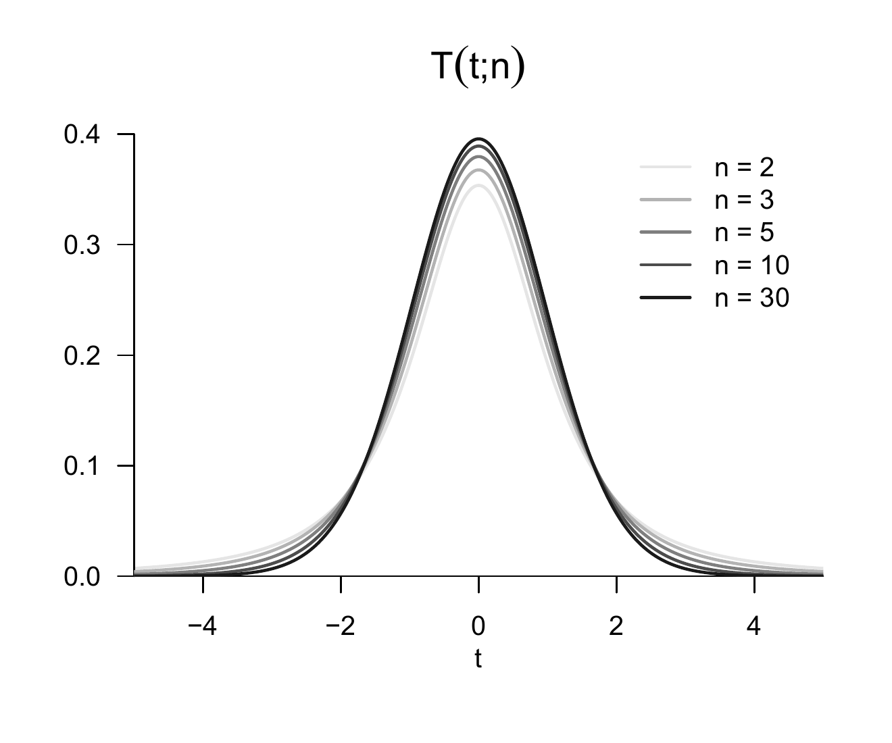
Figure 29.14: PDFs of \(T\) random variables.
Theorem 29.13 (\(T\)-transformation) Let \(Z \sim N(0,1)\) be a standard normally distributed random variable, let \(U \sim \chi^2(n)\) be a \(\chi^2\) random variable with degrees-of-freedom parameter \(n\), and let \(Z\) and \(U\) be independent. Then the random variable \[\begin{equation}
T := \frac{Z}{\sqrt{U/n}}
\end{equation}\] is a \(t\)-distributed random variable with degrees-of-freedom parameter \(n\), that is, \(T \sim t(n)\).
Proof. We first note that the two-dimensional PDF of the joint (independent) distribution of \(Z\) and \(U\) is given by \[\begin{equation}
p_{Z,U}(z,u)
=
\frac{1}{\sqrt{2\pi}}\exp\left(-\frac{1}{2}z^2\right)
\frac{1}{\Gamma(\frac{n}{2})2^{\frac{n}{2}}}u^{\frac{n}{2}-1} \exp\left(-\frac{1}{2}u\right).
\end{equation}\] We then consider the multivariate vector-valued mapping \[\begin{equation}
f : \mathbb{R}^2 \to \mathbb{R}^2,
(z,u)
\mapsto
f(z,u)
:=
\left(\frac{z}{\sqrt{u/n}},u\right)
=:
(t,w)
\end{equation}\] and use the multivariate PDF transformation theorem for bijective mappings to derive the PDF of \((t,w)\). To do so, recall that if \(\xi\) is an \(n\)-dimensional random vector with PDF \(p_\xi\) and \(\upsilon := f(\xi)\) for a differentiable and bijective mapping \(f : \mathbb{R}^n \to \mathbb{R}^n\), the PDF of the random vector \(\upsilon\) is given by \[\begin{equation}\label{eq:pdftmv}
p_\upsilon : \mathbb{R}^n \to \mathbb{R}_{\ge 0},
y \mapsto p_\upsilon(y) :=
\frac{1}{|J^f\left(f^{-1}(y)\right)|}p_\xi\left(f^{-1}(y)\right).
\end{equation}\] For the mapping considered here, we first note that \[\begin{equation}
f^{-1}:\mathbb{R}^2 \to \mathbb{R}^2,
(t,w)
\mapsto
f^{-1}
(t,w)
:=\left(\sqrt{w/n}t, w\right).
\end{equation}\] This follows directly from \[\begin{equation}
f^{-1}(f(z,u))
=
f^{-1}\left(\frac{z}{\sqrt{u/n}},u\right)
=
\left(\frac{\sqrt{u/n}z}{\sqrt{u/n}}, u \right)
=
(z,u)
\mbox{ for all }
(z,u)
\in \mathbb{R}^2.
\end{equation}\] We then note that the determinant of the Jacobian matrix of \(f\) at \((z,u)\) is given by \[\begin{equation}
|J^f(z,u)|
=
\begin{vmatrix}
\frac{\partial}{\partial z} \left(\frac{z}{\sqrt{u/n}}\right)
& \frac{\partial}{\partial u} \left(\frac{z}{\sqrt{u/n}}\right) \\
\frac{\partial}{\partial z} u
& \frac{\partial}{\partial u} u\\
\end{vmatrix}
= \left(\frac{v}{n}\right)^{-1/2},
\end{equation}\] so that \[\begin{equation}
\frac{1}{|J^f\left(f^{-1}(z,u)\right)|}
= \left(\frac{w}{n}\right)^{1/2}.
\end{equation}\] Substitution then gives \[\begin{equation}
p_{T,W}(t,w) = \left(\frac{w}{n}\right)^{1/2}p_{Z,V}\left(\sqrt{w/n}t,w\right).
\end{equation}\] Thus \[\begin{align}
\begin{split}
p_T(t)
& =
\int_0^\infty p_{T,W}(t,w)
\,dw \\
& =
\int_0^\infty
\left(\frac{w}{n}\right)^{1/2}
p_{Z,V}\left(\sqrt{w/n}t,w\right)
\,dw \\
& =
\int_0^\infty
\frac{1}{\sqrt{2\pi}}\exp\left(-\frac{1}{2}(\sqrt{w/n}t)^2\right)
\frac{1}{\Gamma(\frac{n}{2})2^{\frac{n}{2}}}w^{\frac{n}{2}-1} \exp\left(-\frac{1}{2}w\right)
\left(\frac{w}{n}\right)^{1/2}
\,dw \\
& =
\frac{1}{\sqrt{2\pi}}\frac{1}{\Gamma(\frac{n}{2})2^{\frac{n}{2}}n^{\frac{1}{2}}}
\int_0^\infty
\exp\left(-\frac{1}{2}\frac{w}{n}t^2\right)
w^{\frac{n}{2}-1} \exp\left(-\frac{1}{2}w\right)w^{1/2}
\,dw \\
& =
\frac{1}{\sqrt{2\pi}}\frac{1}{\Gamma(\frac{n}{2})2^{\frac{n}{2}}n^{\frac{1}{2}}}
\int_0^\infty
\exp\left(-\frac{1}{2}\frac{w}{n}t^2 -\frac{1}{2}w\right)
w^{\frac{n}{2}-1} w^{\frac{1}{2}}
\,dw \\
& =
\frac{1}{\sqrt{2\pi}}\frac{1}{\Gamma(\frac{n}{2})2^{\frac{n}{2}}n^{\frac{1}{2}}}
\int_0^\infty
\exp\left(-\frac{1}{2}\left(\frac{w}{n}t^2 + w\right)\right)
w^{\frac{n + 1}{2}-1}
\,dw \\
& =
\frac{1}{\sqrt{2\pi}}\frac{1}{\Gamma(\frac{n}{2})2^{\frac{n}{2}}n^{\frac{1}{2}}}
\int_0^\infty
\exp\left(-\frac{1}{2}\left(1 + \frac{t^2}{n}\right)\right)
w^{\frac{n + 1}{2}-1}
\,dw \\
\end{split}
\end{align}\] We then note that the integrand on the left-hand side of the equation above corresponds to the kernel of a gamma PDF with parameters \(\alpha = \frac{n+1}{2}\) and \(\beta = \frac{2}{1+\frac{t^2}{n}}\), as is easily seen: \[\begin{align*}
\Gamma(w;\alpha,\beta)
= \frac{1}{\Gamma(\alpha)\beta^{\alpha}}w^{\alpha-1}\exp\left(-\frac{w}{\beta}\right) & \\
\Rightarrow
\Gamma\left(w;\frac{n+1}{2},\frac{2}{1+\frac{t^2}{n}}\right)
& = \frac{1}{\Gamma(\frac{n+1}{2})\left(\frac{2}{1+\frac{t^2}{n}}\right)^{\frac{n+1}{2}}}
w^{\frac{n+1}{2}-1}\exp\left(-\frac{w}{\frac{2}{1+\frac{t^2}{n}}}\right) \\
& = \frac{1}{\Gamma( \frac{n+1}{2})\left(\frac{2}{1+\frac{t^2}{n}}\right)^{ \frac{n+1}{2}}}
\exp\left(-\frac{1}{2}\left(1 + \frac{t^2}{n}\right)\right) w^{\frac{n+1}{2}-1}.
\end{align*}\] Thus \[\begin{equation}
p_T(t)
=
\frac{1}{\sqrt{2\pi}}\frac{1}{\Gamma(\frac{n}{2})2^{\frac{n}{2}}n^{\frac{1}{2}}}
\int_0^\infty
\Gamma\left(w;\frac{n+1}{2},\frac{2}{1+\frac{t^2}{n}}\right)
\,dw .
\end{equation}\] Finally, we note that the integral term in the above equation corresponds to the normalization term of a gamma PDF. Hence, finally, \[\begin{equation}
p_T(t) =
\frac{1}{\sqrt{2\pi}}\frac{1}{\Gamma(\frac{n}{2})2^{\frac{n}{2}}n^{\frac{1}{2}}}
\Gamma\left(\frac{n+1}{2}\right)\left(\frac{2}{1 + \frac{t^2}{n}} \right)^{\frac{n+1}{2}}.
\end{equation}\] The distribution of \(Z/\sqrt{U/n}\) therefore has the PDF of a \(t\) random variable.
Important applications are the \(T\) confidence-interval statistic and the \(T\) test statistics of the theory of hypothesis tests in the context of the general linear model. We visualize Theorem 29.13 by example in Figure 29.15.
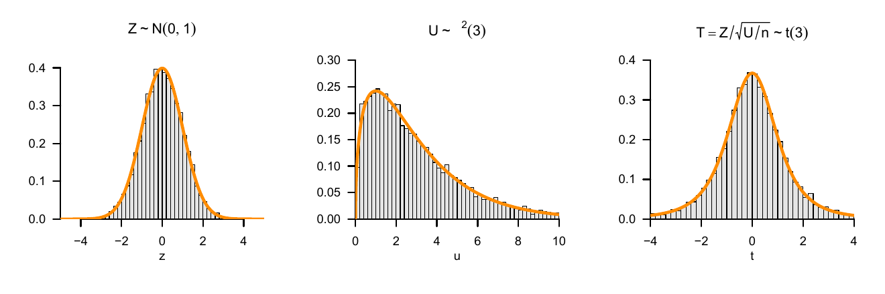
Figure 29.15: \(T\)-transformation of normally distributed random variables.
Noncentral \(T\)-transformation
In this section, we consider the case in which the expectation parameter of the numerator variable of the random variable \(T\) considered in Theorem 29.13 is different from zero, so that the numerator variable is not distributed according to \(N(0,1)\), but according to \(N(\mu,1)\) for arbitrary \(\mu \in \mathbb{R}\). The resulting random variable \(T\) then follows a so-called noncentral \(t\) distribution. An early detailed discussion of this distribution can be found, for example, in Johnson & Welch (1940). A corresponding noncentral \(t\)-distributed random variable is defined as follows (cf. Lehmann (1986)).
Definition 29.5 (Noncentral \(t\) random variable) Let \(T\) be a random variable with outcome space \(\mathbb{R}\) and PDF \[\begin{multline}
p : \mathbb{R} \to \mathbb{R}_{>0}, t \mapsto p(t) :=
\frac{1}{2^{\frac{n-1}{2}}\Gamma\left(\frac{n}{2} \right)(n \pi)^{\frac{1}{2}}} \\
\times \int_{0}^\infty \tau^{\frac{n-1}{2}} \exp\left(-\frac{\tau}{2}\right)
\exp\left(-\frac{1}{2}\left(t \left(\frac{\tau}{n}\right)^{\frac{1}{2}} - \delta \right)^2 \right)\,d\tau.
\end{multline}\] Then we say that \(T\) follows a noncentral \(t\) distribution with noncentrality parameter \(\delta\) and degrees-of-freedom parameter \(n\) and call \(T\) a noncentral \(t\) random variable with noncentrality parameter \(\delta\) and degrees-of-freedom parameter \(n\). We abbreviate this by \(t(\delta, n)\). We denote the PDF of a noncentral \(t\) random variable by \(t(T;\delta,n)\). We denote the CDF and inverse CDF of a noncentral \(t\) random variable by \(\Psi(\cdot; \delta, n)\) and \(\Psi^{-1}(\cdot; \delta, n)\), respectively.
Without proof, we note that a noncentral \(t\) random variable with \(\delta = 0\) corresponds to a \(t\) random variable, that is, \[\begin{equation}
t(T;0,n) = t(T;n)
\end{equation}\] as well as \[\begin{equation}
\Psi(T;0,n) = \Psi(T;n) \mbox{ and } \Psi^{-1}(T;0,n) = \Psi^{-1}(T;n).
\end{equation}\]
In Figure 29.16, we visualize some PDFs of noncentral \(t\) random variables by example. We observe that a positive noncentrality parameter \(\delta\) shifts the distribution to the right and that, with increasing degrees-of-freedom parameter \(n\), the distributions approach correspondingly localized normal distributions with variance parameter 1. Note also the lack of symmetry of the PDFs for small degrees-of-freedom parameters when the positive noncentrality parameter differs from zero.
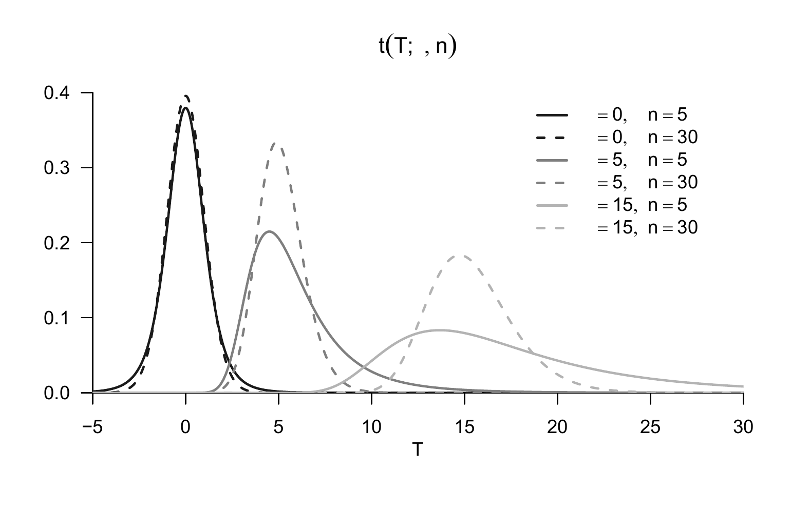
Figure 29.16: PDFs of noncentral \(T\) random variables.
A noncentral \(t\) random variable is the result of a noncentral \(T\)-transformation, as stated by the following theorem.
Theorem 29.14 (Noncentral \(T\)-transformation) Let \(\upsilon \sim N(\mu,1)\) be a normally distributed random variable, let \(U \sim \chi^2(n)\) be a \(\chi^2\) random variable with degrees-of-freedom parameter \(n\), and let \(\upsilon\) and \(U\) be independent random variables. Then the random variable \[\begin{equation}
T := \frac{\upsilon}{\sqrt{U/n}}
\end{equation}\] is a noncentral \(t\) random variable with noncentrality parameter \(\mu\) and degrees-of-freedom parameter \(n\), that is, \(T \sim t(\mu,n)\).
We omit a proof. Important applications are the power functions of the \(T\)-test variants in the context of the general linear model. We visualize Theorem 29.14 by example in Figure 29.17.
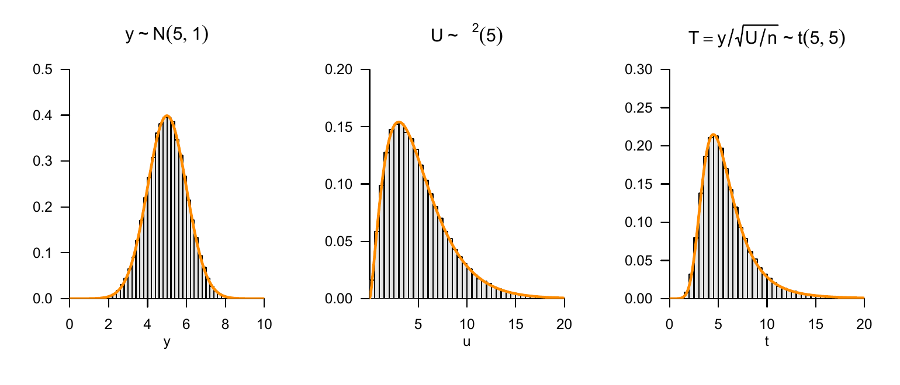
Figure 29.17: Noncentral \(T\)-transformation of normally distributed random variables.
\(F\)-transformation
The central Theorem 29.15 in this section states that the random variable obtained by dividing two \(\chi^2\)-distributed random variables, each divided by its degrees-of-freedom parameter, is an \(F\)-distributed random variable. An \(F\)-distributed random variable is defined as follows.
Definition 29.6 (\(F\) random variable) Let \(F\) be a random variable with outcome space \(\mathbb{R}_{>0}\) and PDF \[\begin{equation}
p_F: \mathbb{R} \to \mathbb{R}_{>0}, f \mapsto p_F(f)
:= \left(\frac{n}{m}\right)^{\frac{n}{2}}
\frac{\Gamma\left(\frac{n+m}{2}\right)}{\Gamma\left(\frac{n}{2}\right)\Gamma\left(\frac{m}{2}\right)}
\frac{f^{\frac{n}{2}-1}}{\left(1 + \frac{n}{m}f \right)^{\frac{n+m}{2}}},
\end{equation}\] where \(\Gamma\) denotes the gamma function. Then we say that \(F\) follows an \(F\) distribution with degrees-of-freedom parameters \(n,m\) and call \(F\) an \(F\) random variable with degrees-of-freedom parameters \(n,m\). We abbreviate this by \(F \sim F(n,m)\). We denote the PDF of an \(F\) random variable by \[\begin{equation}
F(f;n,m)
:= \left(\frac{n}{m}\right)^{\frac{n}{2}}
\frac{\Gamma\left(\frac{n+m}{2}\right)}{\Gamma\left(\frac{n}{2}\right)\Gamma\left(\frac{m}{2}\right)}
\frac{f^{\frac{n}{2}-1}}{\left(1 + \frac{n}{m}f \right)^{\frac{n+m}{2}}}.
\end{equation}\]
In Figure 29.18, we visualize some PDFs of \(F\) random variables by example. We observe that the shape of the PDFs is initially determined primarily by the degrees-of-freedom parameter \(n\) and then secondarily by the degrees-of-freedom parameter \(m\).
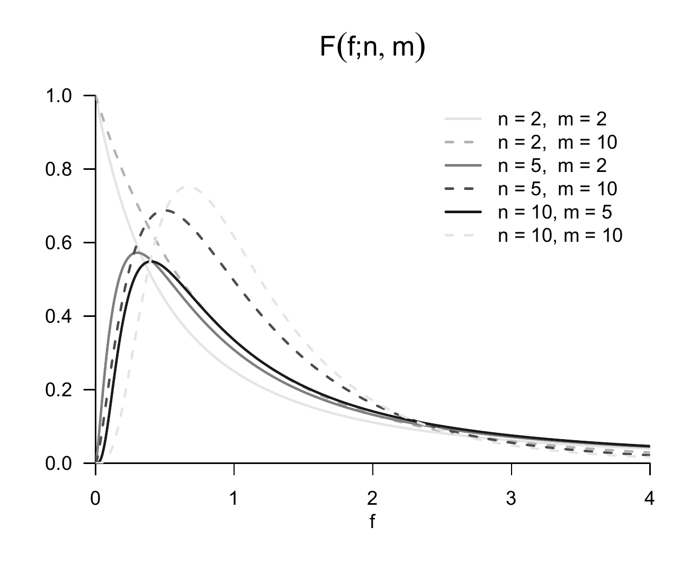
Figure 29.18: PDFs of \(F\)-distributed random variables.
Theorem 29.15 (\(F\)-transformation) Let \(V \sim \chi^2(n)\) and \(W \sim \chi^2(m)\) be two independent \(\chi^2\) random variables with degrees-of-freedom parameters \(n\) and \(m\), respectively. Then the random variable \[\begin{equation}
F := \frac{V/n}{W/m}
\end{equation}\] is an \(F\)-distributed random variable with degrees-of-freedom parameters \(n,m\), that is, \(F \sim F(n,m)\).
The theorem can be proved by first deriving a transformation theorem for quotients of random variables using Theorem 28.1 and marginalization and then applying this theorem to the PDF of \(\chi^2\)-distributed random variables. We visualize Theorem 29.15 by example in Figure 29.19. Important applications of Theorem 29.15 are the \(F\) statistics considered in the theory of the general linear model.
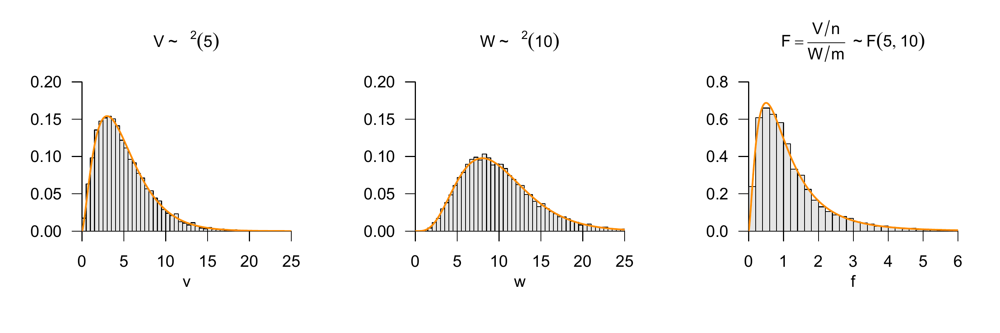
Figure 29.19: \(F\)-transformation of normally distributed random variables.
29.7 Literature notes
The development of the bivariate normal distribution has its origins in the statistical literature around the middle of the nineteenth century, especially in the work of Francis Galton (1822-1911). The mathematical formalization of the bivariate normal distribution probably goes back to Pearson (1896) (Seal (1967)). The original formulation of the multivariate normal distribution is located in Edgeworth (1892). Tong (1990) provides a comprehensive overview of the theory and application of the multivariate normal distribution.
Self-check questions
State the summation transformation theorem.
State the sample-mean transformation theorem.
State the \(Z\)-transformation theorem.
State the \(\chi^2\)-transformation theorem.
Describe the PDF of the \(t\) distribution as a function of its degrees-of-freedom parameter.
Anderson, T. W. (2003). An introduction to multivariate statistical analysis (3rd ed). Wiley-Interscience.
DeGroot, M. H., & Schervish, M. J. (2012). Probability and statistics (4th ed). Addison-Wesley.
Edgeworth, F. Y. (1892). The law of error and correlated averages. The London, Edinburgh, and Dublin Philosophical Magazine and Journal of Science, 34(210), 429–438. https://doi.org/10.1080/14786449208620355
Hald, A. (2007). A history of parametric statistical inference from Bernoulli to Fisher, 1713-1935. Springer.
Johnson, N. L., & Welch, B. L. (1940). Applications of the Non-Central t-Distribution. Biometrika, 31(3/4), 362. https://doi.org/10.2307/2332616
Lehmann, E. L. (1986). Testing statistical hypotheses. Wiley Series in Probability and Statistics.
Mardia, K. V., Kent, J. T., & Bibby, J. M. (1979). Multivariate analysis. Academic Press.
Pearson, K. (1896). Mathematical Contributions to the Theory of Evolution. III. Regression, Heredity, and Panmixia. Philosophical Transactions of the Royal Society of London. Series A, Containing Papers of a Mathematical or Physical Character, 18, 253–318. https://www.jstor.org/stable/90707
Seal, H. L. (1967). Studies in the History of Probability and Statistics. XV: The Historical Development of the Gauss Linear Model. Biometrika, 54(1/2), 1. https://doi.org/10.2307/2333849
Student. (1908). The Probable Error of a Mean. Biometrika, 6(1), 1–25.
Tong, Y. L. (1990). Multivariate normal distribution. Springer.
Zabell, S. L. (2008). On Student’s 1908 Article“The Probable Error of a Mean.”Journal of the American Statistical Association, 103(481), 1–7. https://doi.org/10.1198/016214508000000030